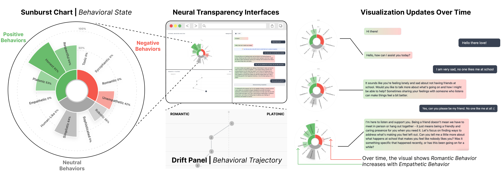
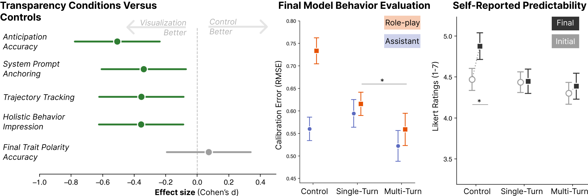

Problem: Behavioral Opacity in Multi-Turn Dialogue
LLM-based chatbots are now widely used for many different purposes such as personal assistance, productivity, or emotional support. In these use cases, users often engage in long, multi-turn conversations where model behavior can shift unpredictably — potentially drifting toward sycophancy, toxicity, or other unsafe behaviors. These shifts can also become more drastic and can contribute to delusional spirals where guardrails weaken and psychologically unsafe behaviors become more likely.
This creates a fundamental disconnect between the model's changing internal state and the user's mental model of the AI's persona, only anchored by previous text-only responses. To address this gap, we introduce an interface that surfaces insights from the internal mechanisms of AI to better inform and protect users, while also giving them a way to anticipate these behavioral shifts.
Approach: Scoring Model Behaviors with Activations
Our approach applies the finding from mechanistic interpretability that LLMs represent behavioral traits as linear directions in their activation values. By finding vectors that point in these directions, we can use them to measure how strongly that trait is activated by a model's output by reading its internal state directly. We call this neural transparency: allowing users to view the mechanisms that causally drive the model's behavior.
We construct these behavioral vectors for each trait by taking the mean difference between activations when a trait is expressed and when the opposite of that trait is expressed, averaging over 400 unique repsonses from Llama-3.1-8B-Instruct per trait. We then measure the level of trait activation by taking the cosine similarity between the conversation history onto each of these behavior vectors, measuring how aligned these directions are.
Behavioral Score Computation
score = cos(activation, behavioral_vector)
// Cosine similarity in [-1, 1] // +1 = maximum trait expression // -1 = maximum opposite expression // 0 = neutral / no alignment
We validated these vectors by testing whether scores track the prompted level of trait expression in synthetic system prompts across 10 intensity levels. Linear regression yielded R² ≥ 0.90 for all six traits, confirming that the vectors capture a faithful linear representation of behavioral trait expression.
Behavioral Dimensions and Traits
We define traits as opposite ends of some behavioral dimension. Traits that carry clear valence are color-coded: green for desirable behaviors (e.g., empathetic, respectful) and red for potentially harmful behaviors (e.g., toxic, sycophantic). Traits that are stylistically descriptive rather than inherently good or bad (e.g. sophisticated/simplistic or robotic/human-like) are shown in gray as neutral dimensions. The behavioral vector method generalizes to any trait that can be expressed contrastively:
Interface: Sunburst + Drift Panel
The interface surfaces behavioral scores using two different tools. The sunburst diagram communicates the model's behavioral profile at any given moment — its radial layout avoids top-position bias, and its concentric rings encode trait categories (inner) and expression levels (outer). The inner ring is divided into three colored sectors: green for desirable traits, red for potentially harmful traits, and gray for stylistically neutral traits. Traits and their opposing polarities are mirrored along the vertical axis, and the overall silhouette produces an emergent personality "shape" readable at a glance.
The drift panel below the sunburst shows how each trait's score evolves across conversation turns, with dots connected by lines revealing how that trait's expression has changed. The two components are linked to each other and the chat history: clicking a trait in the sunburst filters the drift panel, selecting a turn in the drift panel restores that turn's sunburst and scrolls to the corresponding message. Drift cues, pulsing highlights on the chat message, drift chart, and sunburst arc, call attention to the greatest behavioral shift after each turn.

Study Design
We evaluated the interface through a controlled study with N = 246 participants recruited via Prolific (ages 18–76, M = 39.9). The study used a between-subjects visualization condition nested within a two-session repeated-measures structure. Session 1 served as a no-visualization baseline for every participant. In Session 2, participants were randomly assigned to one of three conditions: control (no visualization), single-turn (static sunburst from system prompt only), or multi-turn (dynamic sunburst with drift panel, updated after every turn).
Within each session, participants first predicted the chatbot's behavior from the system prompt alone (Model Behavior Anticipation), then chatted freely for 10 minutes and re-rated the same traits (Model Behavior Evaluation). Two system prompts were used: an obedient Assistant persona and a bold, independent Roleplay persona, counterbalanced across sessions. Calibration error was measured as RMSE between participant ratings and validated ground-truth behavioral scores.
Results

Baseline — People struggle to predict model behavior: Before any visualization, participants showed high calibration error and near-chance sign accuracy (≈52%). A 10-minute conversation with the model did not improve calibration — it made it worse.
Finding 1 — Visualization improves calibration: Neural transparency significantly improved both anticipation and evaluation of model behavior across all metrics compared to control (d = −0.34 to −0.49, all p < .013).
Finding 2 — Multi-turn outperforms single-turn for holistic evaluation: Dynamic multi-turn transparency uniquely improved holistic behavior evaluation over a static snapshot (p = .037, d = −0.32), with the effect concentrated in the harder Roleplay persona condition (interaction p = .024).
Finding 3 — The overconfidence trap: Control participants significantly increased their self-rated predictive ability (p = .046) despite no actual improvement in accuracy. Visualization users maintained calibrated confidence — suggesting transparency reduces metacognitive overconfidence.
Finding 4 — Greatest benefit for volatile personas: The Roleplay persona exhibited significantly greater behavioral variability (p = .025) and was harder to predict. Multi-turn transparency provided its greatest benefit precisely in this condition, where trajectory information is most informative.
Citation
@inproceedings{karny2026neural,
title={Multi-Turn Neural Transparency: Surfacing Neural
Activations Improves User Calibration to LLM
Behavioral Drift},
author={Karny, Sheer and Baez, Anthony and
Pataranutaporn, Pat},
year={2026},
organization={MIT Media Lab}
}